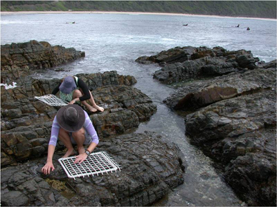

Data entry

After collecting data, being able to enter those data and import into various software packages are obviously essential skills for students and researchers in the environmental sciences. You might think that you just write the numbers in a spreadsheet package and open that file in another piece of software, but there is actually quite a bit to be learnt about tidy ways to enter the data and import that data without errors.
On these pages, we give some guidance for data entry that will save a lot of time when it comes to analysing data and making effective figures. We also describe the types and structure of data objects in R that you will see once you have imported your data.
- Data entry - organising data when first entering it into a spreadsheet.
- Importing data into R
- Data types and structure - better understanding data objects in R